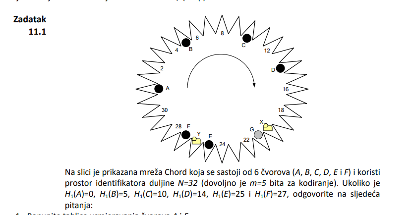
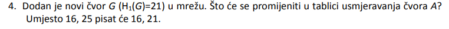
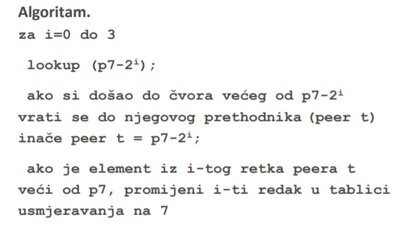
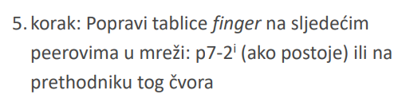

Ovo je krivi odgovor, jelda? Zadnji popravak je za i=4, lookup(21-24)=lookup(5)=B, znači tablica od A se neće ni dirati?
Števo Mislim da nije krivi odgovor. Treba gledati tablicu od A, a ne od G
za i=4, lookup(0 + 24) = lookup(16) = 21 što je čvor G
Tablica od A će se promijeniti
Ovo što si ti napisao je lookup za tablicu usmjeravanja čvora G
Števo Mislim da si gledao krivi algoritam, ovo je sa slajda 54

i to se koristi kad se doda novi čvor u mreži, kojim redoslijedom ažurirati tablice susjeda
Ali u ovom pitanju se traži kako će izgledati ažurirana tablica od čvora A, a to samo ponovno provedeš postupak tablice usmjeravanja
Cvija E da, po tom algoritmu sam radio
Gdje piše ovo da se se samo ponovno izračunaju tablice kad dođe novi čvor? Jer ako gledam po prezi baš se čini kao da su jedina ažuriranja tablica za te čvorove koje pobere taj algoritam.

Moze meni neko pojasnit kod chordovog prstena kako mi dobivamo ovaj m? Procitao sam iz prezentacija i udzebnika ali i dalje mi nije jasno. Cini mi se ko da to mora biti unaprijed zadano tj oni nam moraju odredit
Nocna_smjena Da, bude unaprijed zadano
Učim za zimski ispitni rok, isplati li se učiti po udžbeniku ili gledati predavanja/čitati preze? Also, ulazi li cijelo gradivo udzbenika u ispitni rok?
IdeGas Mislim da su ti prezentacije holy grail jer na mi-ju neke stvari nisu u knjizi, tako da mislim da je najbolje ić po prezama i onda pogledat udžbenik za neke stvari da sve stavi u perspektivu. Bar je to meni plan
Prolaženje po ovim pitanjima na kraju lekcije, korisno ili da ne gubim vrijeme na njih? I jel ima itko kakve starije ispite?
huba buba Ja upravo odgovaram na ta pitanja. Kad smo kod toga, zna li itko odgovor na: Poslužitelj je implementiran pomoću socketa TCP na portu 10000 s ograničenjem NUMBER_OF_THREADS=2. Objasnite detaljno operacije prilikom dolaska prvog klijentskog zahtjeva na poslužitelj. Što se događa kada stigne drugi, pa treći klijentski zahtjev, a prve dvije konekcije su još uvijek aktivne? Koliko socketa je vezano uz port 10000?
IdeGas pretpostavljam se da ovaj NUMBER_OF_THREADS na max broj novih threadova koji se mogu stvoriti i da ne uzima u obzir listener thread, ugl. moci ce se spojiti 1. i 2. klijent i za svakog ce se stvoriti zasebni socket na portu 10000 za komunikaciju, treći će morati čekati da se prekine jedna od ove dvije prethodne veze. Ukupno su tri socketa vezana za port 10000
a ako se number_of_threads odnosi i na listener thread, onda ce se samo ovaj prvi moci spojiti
huba buba i mislio sam da je tako, tnx!
Otkud uciti za usmeni?